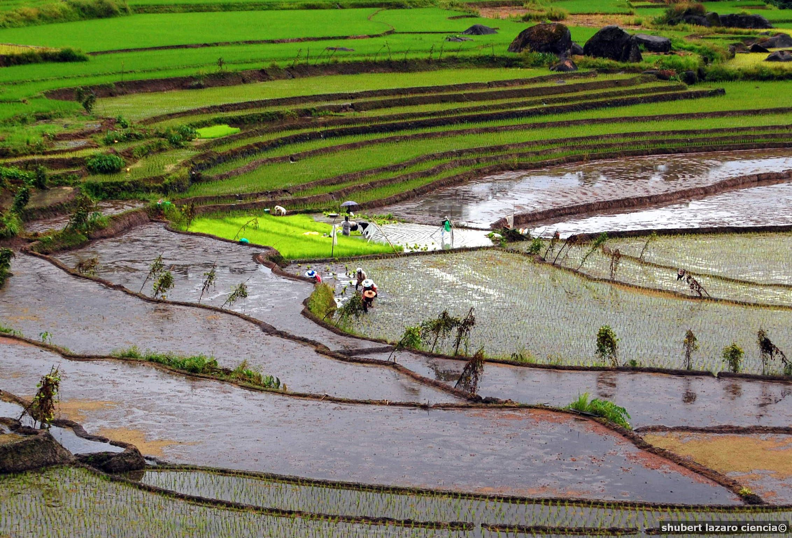

About Kiangan
Kiangan is the oldest town in the province. It derives its name from Kiyyangan, an ancient village near the bank of the Ibulao River across the Lagawe valley. The name Kiyyangan is enshrined in Ifugao mythology and is believed to be the dwelling of Wigan and Bugan, the mythological ancestors of the Ifugao. It was the former capital of Ifugao until the topology was deemed unfit and moved to neighboring Lagawe.
Early History of Kiangan
Kiangan, officially the Municipality of Kiangan is a 4th class municipality in the province of Ifugao, Philippines. According to the 2020 census, it has a population of 17,691 people.
Kiangan is the oldest town in the province. It derives its name from Kiyyangan, an ancient village near the bank of the Ibulao River across the Lagawe valley. The name Kiyyangan is enshrined in Ifugao mythology and is believed to be the dwelling of Wigan and Bugan, the mythological ancestors of the Ifugao. It was the former capital of Ifugao until the topology was deemed unfit and moved to neighboring Lagawe.
The Nagacadan Rice Terraces are part of the Rice Terraces of the Philippine Cordilleras World Heritage Site.
Agriculture and tourism are the main sources of local economic activities which supports commerce and trade among townsfolk. Its terraced rice fields do not only provide produce for the farmers but attract tourists as well.
Landmass of Kiangan
The municipality has a land area of 200.00 square kilometers or 77.22 square miles which constitutes 7.64% of Ifugao's total area. Its population as determined by the 2020 Census was 17,691. This represented 8.53% of the total population of Ifugao province, or 0.98% of the overall population of the Cordillera Administrative Region. Based on these figures, the population density is computed at 88 inhabitants per square kilometer or 229 inhabitants per square mile.
Government
Kiangan is politically subdivided into 14 barangays. These barangays are headed by elected officials: Barangay Captain, Barangay Council, whose members are called Barangay Councilors. All are elected every three years.
Barangays
- Ambabag
- Baguinge
- Bolog
- Bokiawan
- Dalligan
- Duit
- Hucab
- Julongan
- Lingay
- Mungayang
- Nagacadan
- Pindongan
- Poblacion
- Tupac